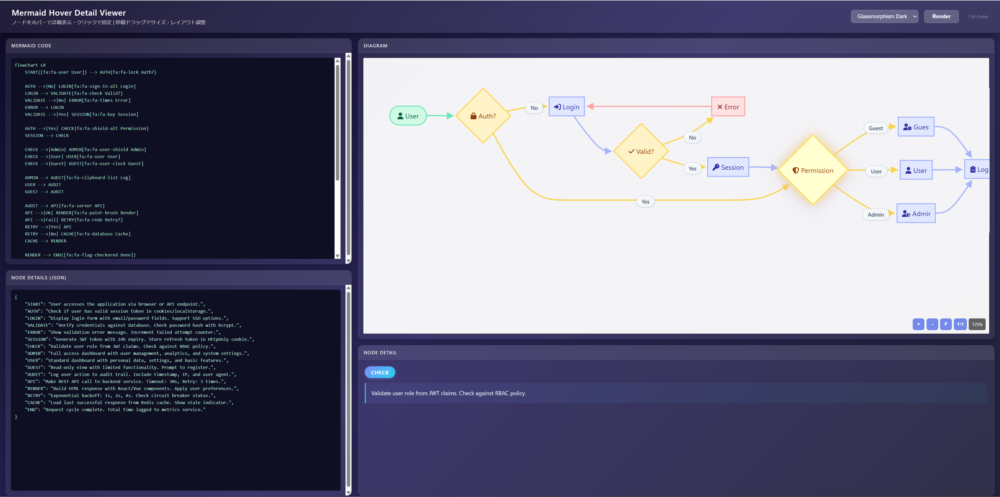
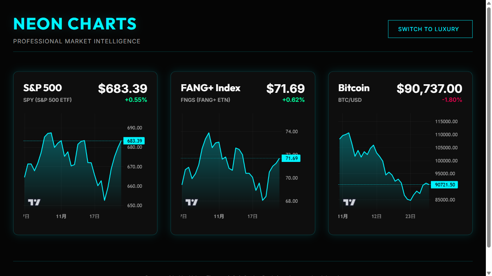
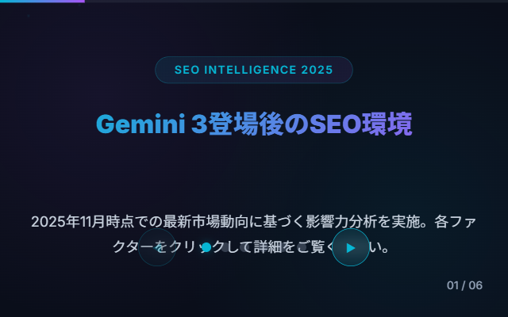
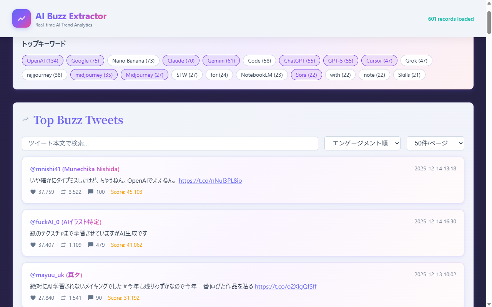
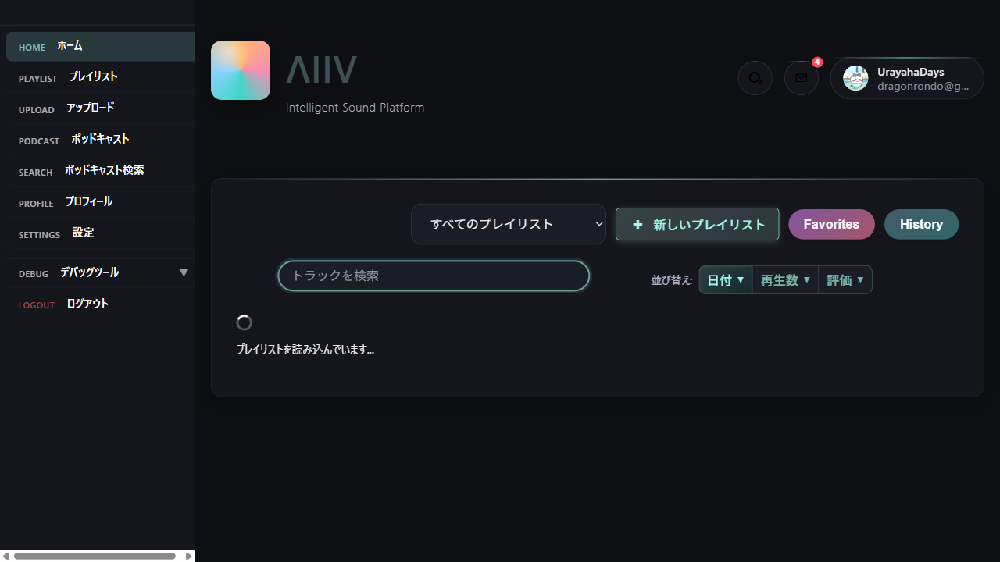
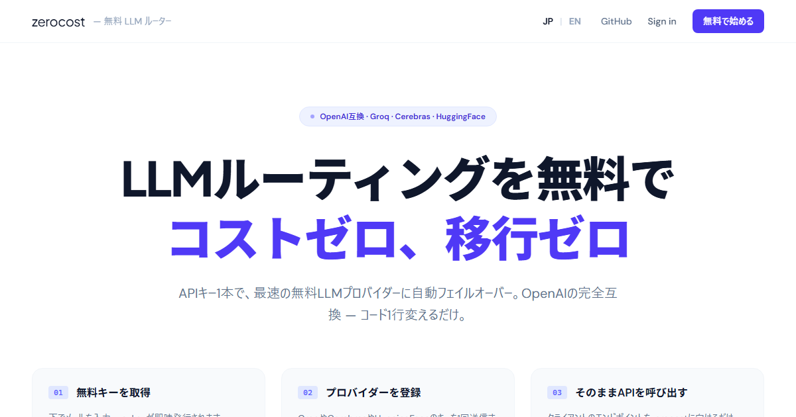

データ可視化・分析プロジェクト
Flowchart Hover Viewer

Mermaid.jsフローチャートをホバーで詳細表示できるインタラクティブビューワー。 ノードにマウスオーバーで説明パネルが表示され、ドラッグ操作でレイアウト切り替えも可能。 Glassmorphism UIによる美しいダークテーマを採用。単一HTMLファイルでオフライン動作。
AI導入分析レポート
NEW経産省・日銀・McKinsey・BCG等の公的データに基づく、日本企業のAI導入成功vs失敗ケーススタディ分析。 三菱UFJ・パナソニック等の実在企業事例と、投資配分・ROI比較を37枚のインタラクティブスライドで可視化。 McKinsey/BCGレベルのコンサルティング資料デザインを再現。
市場指数チャート

SP500とFANG+指数の価格推移を同時に可視化。Cyberpunk Matrix風とSynthwave Retro風のデザインで、 日次・週次・月次の時間軸切り替え機能を実装。Chart.jsによるリアルタイム更新とCSS3アニメーション。
AIツールトレンド分析

GitHub TrendingとWikipedia Pageviews APIを活用し、AIプロジェクト・画像生成・動画生成ツールの トレンドランキングを自動収集・可視化。GitHub Trendは毎日9時、AI画像/動画ランキングは3時間ごとに 自動更新。Gemini API翻訳機能により全ての説明文を自然な日本語で提供。
Gemini 3 SEO環境分析

Gemini 3登場後のSEO環境変化を可視化したインタラクティブスライド。 検索クエリの変化、コンテンツ戦略の転換、技術的SEO要件の進化を アニメーション付きグラフとチャートで解説。
インタラクティブ分析ダッシュボード
NEW
AI駆動によるフロントエンド開発によって独自のBIイメージを作成。 デザインコンセプトからの実装経験を活かし、 本格的なビジネスインテリジェンスツールとしての実用化にも対応可能。
Cloud Market Racing Chart
LIVEAI駆動で作成したクラウドサービスのシェア率レーシングバーチャート。 AWS、Azure、Google Cloudの市場シェア推移を動的に可視化し、 時系列データの変化を直感的に理解できるインタラクティブな分析ツール。
データ分析基盤構築
ProductionSageMaker、Snowflakeを活用したエンドツーエンドの分析基盤。 顧客セグメンテーション、売上予測モデルを統合し、 効率的なデータ分析ワークフローを構築。
AI駆動開発プロジェクト
AI Buzz Extractor
NEW

X.comからAI関連のバズツイートを自動収集・分析するリアルタイムダッシュボード。5つのドメイン（AI開発ツール・AI創作物・AIモデル・AIニュース・AIナレッジ）にClaude AIが画像認識を含めて自動分類。いいね・RT・引用・リプライを基にしたエンゲージメントスコア（Twitter公式アルゴリズム準拠）でランキング表示。ブックマーク・既読管理・期間フィルタリング機能を搭載。4時間毎の自動更新でAI業界のトレンドをリアルタイムで把握できます。
AI Integrated Sound Platform
NEW
Claude Code Maxプラン活用による100%個人開発の音楽・ポッドキャスト配信プラットフォーム。Firebase AuthenticationとCloud Firestoreによるユーザー管理から、プレイリスト・フレンド登録・音楽トラックのシェア機能など包括的なユーザー体験を提供。Progressive Web App技術によるオフライン再生対応、レスポンシブデザイン・ダークモードでデザインされたUI/UXを提供。SUNO AIで作成したAI音楽もシェア機能を追加予定。
7-Agent Parallel
Code Review
NEW
複数の専門AIエージェントが並列実行し、多角的にコードを分析するレビューツール。 3つのモード（Standard 7エージェント/Full 12エージェント/Release 17エージェント）で セキュリティ・コード品質・パフォーマンス・UX・アクセシビリティ・ストアガイドライン準拠まで 包括的に検証。Critical/Important/Suggestionsの優先度付き指摘と数値スコアリングで 具体的なファイル・行番号を含む実用的なフィードバックを提供。
VOICEVOX MCP
Notification System
NEW
Claude Codeのタスク実行時に、ずんだもんボイスで進捗・完了を音声通知するMCPサーバー。 VOICEVOX APIとNode.jsを活用し、タスク状態（開始・進行中・完了・エラー）を 100文字以内の簡潔なメッセージで音声化。クロスプラットフォーム対応で、 Windows/Mac/Linuxで動作。音声速度・話者選択も設定可能。 開発作業中のハンズフリー進捗確認に対応。
Claude Code Hook
自動化システム
NEW

Claude Code のイベント駆動型Hook機能を活用した完全自動GitHub Issue報告システム。 SessionEnd HookとToolResult Hookにより、タスク完了・ツール実行を自動検知し、 GitHub Issue #1へリアルタイム報告を投稿。Node.jsとPythonの連携により、 ユーザーの手動指示なしで自動化ワークフローを構築。 開発プロセスの追跡可能性と継続的なドキュメント化に対応。
Claude Skills
Scheduled Execution
NEW
Claude Code SkillsをTask Scheduler（Windows）やcron（Mac/Linux）で定期実行するスターターキット。 Claude Pro/Maxサブスクリプションを活用し、追加API課金なしでAIエージェントを自動実行。 クロスプラットフォーム対応、シンプルなセットアップ手順、セキュリティ考慮事項も完備。 日次レポート生成、定期データ収集、自動メンテナンスタスクなど多様なユースケースに対応。
Zenn Article Audio Reader
NEW
Zenn投稿記事を高品質音声で朗読するWebアプリケーション。 Google Cloud TTS（Neural2音声）とVOICEVOXによる自然な音声合成、 チャンク分割による長文対応、再生速度調整・シーク機能を実装。 GitHub Pagesで配信し、複数記事のプレイリスト再生に対応。 レスポンシブデザインでモバイル・デスクトップ両対応。
Claude Memory System
ActiveAIアシスタントの記憶を永続化するメモリ管理システム。 セッション追跡、コード例保存、洞察記録機能により、継続的な開発体験を支援。 JSONベースのデータ構造でセッション間の情報共有に対応。
LLM統合開発環境
DevelopmentCursor IDE、Claude Code、GitHub Copilotを活用したAI駆動開発環境の構築。 効率的なコード生成、デバッグ、ドキュメント作成を可能にする統合ワークフロー。
業務自動化・Webスクレイピング
社内FAQデータベース検索システム
DevelopmentRAG（Retrieval-Augmented Generation）技術を活用した社内FAQ検索システム。 過去の問い合わせデータをベクトル化し、自然言語での質問に対して最適な回答を提示。 従業員の問い合わせ対応時間を削減。開発ナレッジをドキュメント化し社内共有。
デイリータスク自動化スイート
Production日常的なデータ処理、レポート生成、ファイル管理を自動化するPythonスクリプト集。 Excel処理、メール送信、ファイル同期等の実務タスクを効率化。 GitHub Actionsによるスケジュール実行で自動化。
マルチサイト情報収集システム
Active複数のWebサイトから情報を自動収集・分析するスクレイピングシステム。 BeautifulSoup、Seleniumを活用し、動的コンテンツも対応。 収集データをLLMで自動分類・要約し、構造化された情報として出力。
AI創作プロジェクト
作業用MV制作
NEWSuno AIで楽曲制作、Midjourneyでビジュアル生成、Canvaで動画編集を行ったオルタナティブロックトラック。 AI生成ボーカルとAI制作による楽曲の組み合わせです。 複数のAIツールを駆使した、クリエイティブワークフローの実践例としてもご覧いただけます。
Media Portfolio - AI Video Gallery
NEW
Kling AI Image to Video技術で生成したAI動画作品を展示するメディアポートフォリオ。 漆黒から青みがかった黒へのグラデーション背景、ゴールド・ブラウン系のアクセントカラーで 高級感のあるギャラリーデザインを採用。AI生成動画の可能性を視覚的に表現。
Webデザインプロジェクト
エディトリアルギャラリー
NEW
雑誌のような洗練されたエディトリアルデザインを採用したWebギャラリー。 Bodoni Modaセリフフォント、大胆なタイポグラフィ、全画面プロジェクトセクション、 視差スクロール効果により、印刷物のような高級感を表現。 各プロジェクトに専用の背景画像とアニメーション効果を配置し、 ポートフォリオサイトに適したビジュアル表現を追求。
ネオンブルー
NEW
2130年のネオン輝く東京を舞台にしたサイバーパンクアニメのランディングページ。 ネオンブルー(#00f3ff)・ネオンピンク(#ff006e)のグラデーション、 パーティクルアニメーション、グリッチエフェクトによる近未来的な演出。 Canvas API実装のパーティクル背景、スムーススクロール、 レスポンシブデザインにより、サイバーパンク世界観を完全再現。
zerocost-router
NEW
複数の無料LLM APIキーを1本の統一キーで管理するOpenAI互換ルーター。 Groq・Cerebras・OpenRouter・Gemini・HuggingFaceの5プロバイダーに対応。 429/5xx検知で自動フェイルオーバー。AES-256-GCM暗号化BYOK方式でCloudflare D1に保存。 code1行変えるだけで既存アプリがゼロコストLLMに移行できる。